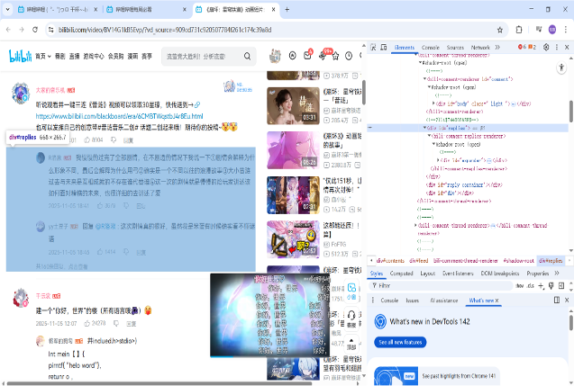
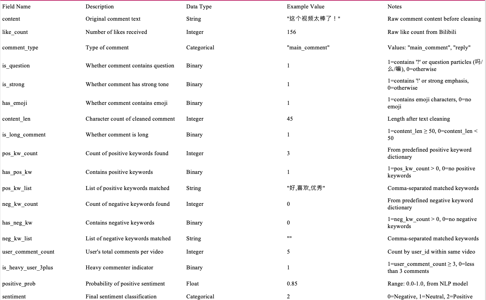

数据分析
B站评论情感分析 · 数据采集与用户洞察
数据清洗 · 文本挖掘 · 情感分析

B站是国内最大的年轻人内容社区之一，用户评论蕴含着丰富的用户偏好与情感表达。本次项目选择“每周推荐”第346期作为数据源，该期涵盖游戏、历史、音乐、美食等46个视频，是观察年轻用户内容偏好的理想样本。项目目标是采集高质量评论数据，通过情感分析洞察用户的情绪倾向与讨论热点。
数据噪声大
原始评论包含大量无关内容（@用户名、重复换行、纯数字、无意义标点），直接影响后续分析的准确性
情感判断依赖人工
传统方法需人工标注情感倾向，效率低且主观性强，难以处理22W条级别的数据
特征维度单一
仅靠文本内容难以全面理解用户表达，需要构建多维特征辅助分析
1. 数据清洗与预处理
- 清理无效字段，去除content字段中的空值与重复条目
- 使用正则表达式去除@用户名（支持中英文、数字、下划线）、多余换行符，将碎片化文本转为连续语句
- 过滤纯数字行（保留“666”等具有语义的表达），剔除仅由标点符号组成的无意义内容
- 完成清洗后，形成高质量语料库，为后续分析奠定基础
2. 文本特征构建
从现有字段中衍生多维特征，丰富分析维度：
- is_question：识别疑问句（含“？”或“吗/么/嘛”等疑问语气）
- is_strong：识别强情感表达（含“！”或强烈语气词）
- has_emoji：检测是否包含表情符号
- content_len：计算文本长度，识别短评与长评
- pos_kw_count / neg_kw_count：基于正负关键词词典，统计情感词出现频次
- is_long_comment：标记长评论（≥50字）
- is_heavy_user_3plus：标记高频评论用户（单视频评论≥3条）
3. 情感分析与可视化
- 采用Erlangshen-RoBERTa预训练模型进行情感分类，该模型针对中文文本优化，能够准确捕捉语义细微差别
- 输出positive_prob（正向概率）与sentiment标签（正向/中性/负向）
- 完成词云生成与情感分布可视化，提炼用户偏好与讨论热点
- 形成完整的社交媒体数据分析流程：从原始评论到结构化分析数据集
- 完成22W条评论数据的清洗与特征构建，形成高质量分析数据集
- 通过预训练模型实现情感自动化标注，覆盖7.5W+主评论与13.4W+回复评论
- 情感分析结果显示：评论区以中性与正向评论为主，用户表达相对克制但参与度高
- 输出词云与可视化图表，直观呈现高频关键词与情绪分布

